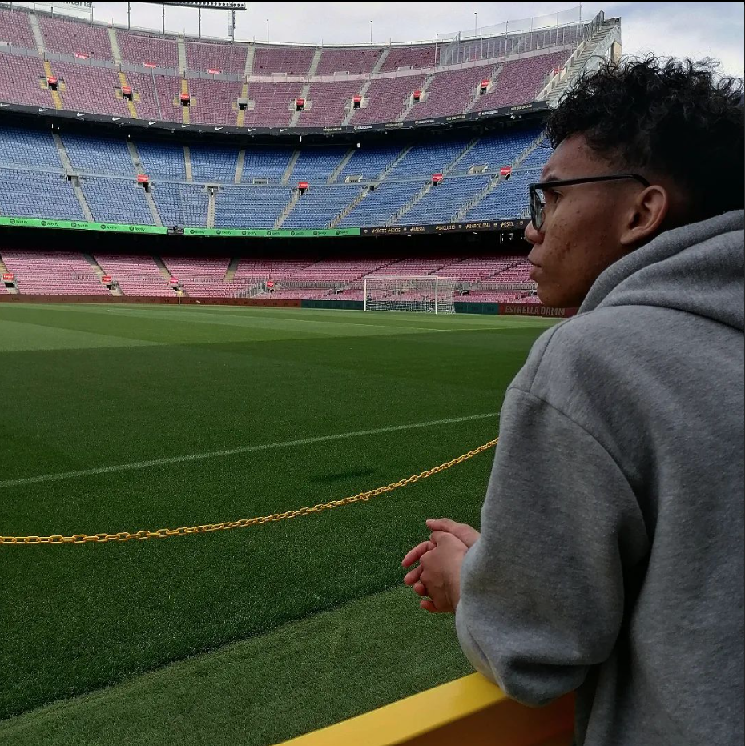
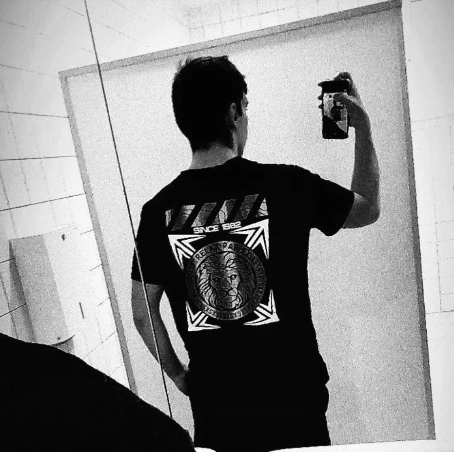
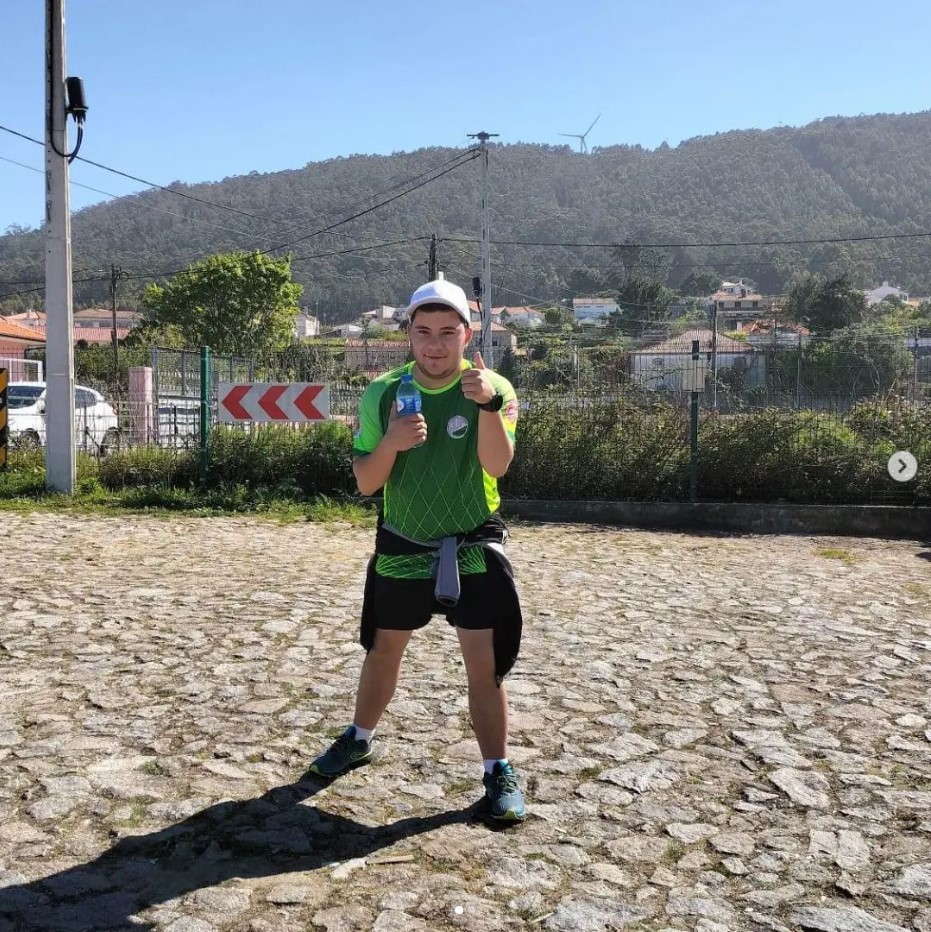

Israel Temoteo
Responsável pelo planejamento da logística do projeto, modelagem em 3D e desenvolvimento do site.
João Rodrigues
Responsável pelo planejamento do Hardware, como também pelo orçamento dos equipamentos.
Eduardo Costa
Responsável pelo planejamento do Hardware, como também pelo orçamento dos equipamentos.
Zacaria Machado
Responsável pelo planejamento de voluntários e suas disposições.